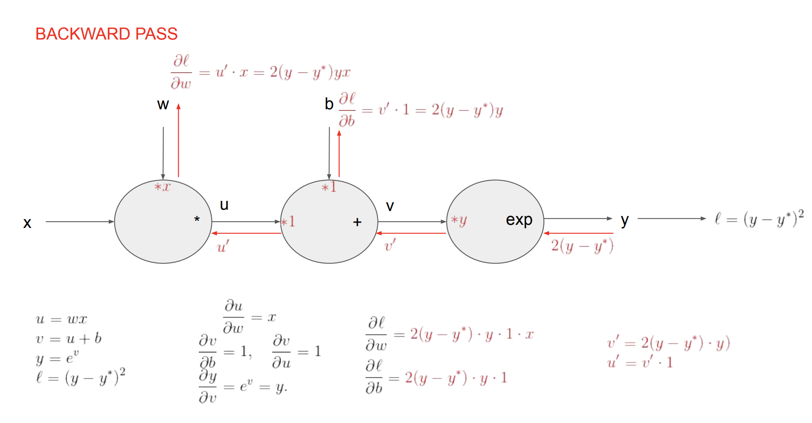

Automatic Differentiation: What Is It and Why Do We Need It?
Table of Contents
Automatic differentiation (AD) is a crucial technique in the field of machine learning for optimizing models through the training process. Please check out this for the introduction of the mathematical foundation behind AD.
Below attached is a video of one of the lessons from the CMU deep learning classes cmu10714 I find really helpful and useful. It's one of the steps of a simple implementation of a ML Module called NEEDLE, and in this video the important gists of automatic differentiation are covered.
Technicalities of Implementing Automatic Differentiation
0:00 Introduction
3:42 The NEEDLE Module
10:49 Codebase and Data Structures
14:20 Computational Graph
29:39 Executing The Computation
45:58 Scenarios Where Things Might Go Wrong
52:17 Reverse Mode Auto Diff
Hand Derivation of Automatic Differentiation
Say we are dealing with the model function below.
Our model is:
Our task is given the 'observations' to recover the weights and the bias .
In order to do so, we will solve the following optimization problem:
In vector form, we define:
and we want to minimize the loss given by:
To minimize the loss we first compute the gradient of each :
Note that the actual gradient of the loss is given by:
For one epoch, (Batch) Gradient Descent updates the weights and bias as follows:
and then we run several epochs.
Backward Propagation Graphic Example

One thing to note is that, in the picture provided here, the gradient of the loss function with respect to the weights and bias is multiplied by the actual output Y. However, this is not necessary and is not typically done in the actual calculation.
The purpose of the gradient descent algorithm is to adjust the weights and bias in the direction of the negative gradient of the loss function with respect to the weights and bias, in order to minimize the loss function. Multiplying the gradient by the actual output Y would not contribute to this objective and would not be necessary.
Running The Code Example
Initializing Random Weights for Our Example
# randomly initialize learnable weights and bias
w_init = random(2)
b_init = random(1)
w = w_init
b = b_init
print("initial values of the parameters:", w, b )# our model forward pass
def forward(x):
return x.dot(w)+b
# Loss function
def loss(x, y):
y_pred = forward(x)
return (y_pred - y)**2
# compute gradient
def gradient(x, y): # d_loss/d_w, d_loss/d_b
return 2*(x.dot(w)+b - y)*x, 2 * (x.dot(w)+b - y)
learning_rate = 1e-2
# Training loop
for epoch in range(10):
grad_w = np.array([0,0])
grad_b = np.array(0)
l = 0
# The addition is used to add the gradients of the loss function
# with respect to each weight and bias together, in order to obtain
# the total gradient of the loss function with respect to the
# weights and bias.
for x_val, y_val in zip(x, y):
grad_w = np.add(grad_w,gradient(x_val, y_val)[0])
grad_b = np.add(grad_b,gradient(x_val, y_val)[1])
l += loss(x_val, y_val)
w = w - learning_rate * grad_w
b = b - learning_rate * grad_b
print("progress:", "epoch:", epoch, "loss",l[0])
# After training
print("estimation of the parameters:", w, b)Linear Regression with Autograd
# Setting requires_grad=True indicates that we want to compute
# gradients with respect to these Tensors during the backward
# pass.
w_v = w_init_t.clone().unsqueeze(1)
w_v.requires_grad_(True)
b_v = b_init_t.clone().unsqueeze(1)
b_v.requires_grad_(True)
print("initial values of the parameters:", w_v.data, b_v.data )An implementation of (Batch) Gradient Descent without computing explicitly the gradient and using autograd instead.
for epoch in range(10):
y_pred = x_t.mm(w_v)+b_v
loss = (y_pred - y_t).pow(2).sum()
# Use autograd to compute the backward pass. This call will compute the
# gradient of loss with respect to all Variables with requires_grad=True.
# After this call w.grad and b.grad will be tensors holding the gradient
# of the loss with respect to w and b respectively.
loss.backward()
# Update weights using gradient descent. For this step we just want to
# mutate the values of w_v and b_v in-place; we don't want to build up
# a computational graph for the update steps, so we use the
# torch.no_grad() context manager to prevent PyTorch from building a
# computational graph for the updates.
# This is because the update steps are not part of the model's
# computation that we want to differentiate.
# They are just simple in-place updates of the parameters.
with torch.no_grad():
w_v -= learning_rate * w_v.grad
b_v -= learning_rate * b_v.grad
# Manually zero the gradients after updating weights
# otherwise gradients will be accumulated after each .backward()
w_v.grad.zero_()
b_v.grad.zero_()
print("progress:", "epoch:", epoch, "loss",loss.data.item())
# After training
print("estimation of the parameters:", w_v.data, b_v.data.t() )Linear Regression with Neural Network
An implementation of (Batch) Gradient Descent using the nn package. Here we have a super simple model with only one layer and no activation function!
# Use the nn package to define our model as a sequence of layers.
# nn.Sequential is a Module which contains other Modules, and applies
# them in sequence to produce its output. Each Linear Module computes
# output from input using a linear function, and holds internal Variables
# for its weight and bias.
model = torch.nn.Sequential(
torch.nn.Linear(2, 1),
)
for m in model.children():
m.weight.data = w_init_t.clone().unsqueeze(0)
m.bias.data = b_init_t.clone()
# The nn package also contains definitions of popular loss functions;
# in this case we will use Mean Squared Error (MSE) as our loss function.
loss_fn = torch.nn.MSELoss(reduction='sum')
# switch to train mode
model.train()
for epoch in range(10):
# Forward pass: compute predicted y by passing x to the model.
# Module objects override the __call__ operator so you can call
# them like functions. When doing so you pass a Variable of
# input data to the Module and it produces a Variable of output data.
y_pred = model(x_t)
# Note this operation is equivalent to: pred = model.forward(x_v)
# Compute and print loss. We pass Variables containing the predicted
# and true values of y, and the loss function returns a Variable
# containing the loss.
loss = loss_fn(y_pred, y_t)
# Zero the gradients before running the backward pass.
model.zero_grad()
# Backward pass: compute gradient of the loss with respect to all
# the learnable parameters of the model. Internally, the parameters
# of each Module are stored in Variables with requires_grad=True,
# so this call will compute gradients for all learnable parameters
# in the model.
loss.backward()
# Update the weights using gradient descent. Each parameter is a
# Tensor, so we can access its data and gradients like we did before.
with torch.no_grad():
for param in model.parameters():
param.data -= learning_rate * param.grad
print("progress:", "epoch:", epoch, "loss",loss.data.item())
# After training
print("estimation of the parameters:")
for param in model.parameters():
print(param)Last step, we update the weights and bias.
model = torch.nn.Sequential(
torch.nn.Linear(2, 1),
)
for m in model.children():
m.weight.data = w_init_t.clone().unsqueeze(0)
m.bias.data = b_init_t.clone()
loss_fn = torch.nn.MSELoss(reduction='sum')
model.train()
optimizer = torch.optim.SGD(model.parameters(), lr=learning_rate)
for epoch in range(10):
y_pred = model(x_t)
loss = loss_fn(y_pred, y_t)
print("progress:", "epoch:", epoch, "loss",loss.item())
# Zero gradients, perform a backward pass, and update the weights.
optimizer.zero_grad()
loss.backward()
optimizer.step()
# After training
print("estimation of the parameters:")
for param in model.parameters():
print(param)Play with The Code Using Pytorch
Change the number of samples and see what happens.
x = random((300,2))
y = np.dot(x, [2., -3.]) + 1.
x_t = torch.from_numpy(x).type(dtype)
y_t = torch.from_numpy(y).type(dtype).unsqueeze(1)
model = torch.nn.Sequential(
torch.nn.Linear(2, 1),
)
for m in model.children():
m.weight.data = w_init_t.clone().unsqueeze(0)
m.bias.data = b_init_t.clone()
loss_fn = torch.nn.MSELoss(reduction = 'sum')
model.train()
optimizer = torch.optim.SGD(model.parameters(), lr=learning_rate)
for epoch in range(10):
y_pred = model(x_t)
loss = loss_fn(y_pred, y_t)
print("progress:", "epoch:", epoch, "loss",loss.item())
# Zero gradients, perform a backward pass, and update the weights.
optimizer.zero_grad()
loss.backward()
optimizer.step()
# After training
print("estimation of the parameters:")
for param in model.parameters():
print(param)Auxiliary Codes
Here are some more reasons why automatic differentiation is essential and applicable in this context:
Efficient Gradient Computation: Autodiff allows you to compute gradients efficiently without manually deriving and implementing them.
Sample Python code:
import tensorflow as tf
x = tf.constant(2.0)
with tf.GradientTape() as tape:
y = x**2
dy_dx = tape.gradient(y, x)
print(dy_dx.numpy()) # Output: 4.0Higher-order Gradients: Autodiff can easily compute higher-order derivatives without much additional effort.
Sample Python code:
import tensorflow as tf
x = tf.constant(2.0)
with tf.GradientTape() as tape1:
with tf.GradientTape() as tape2:
y = x**3
dy_dx = tape2.gradient(y, x)
d2y_dx2 = tape1.gradient(dy_dx, x)
print(d2y_dx2.numpy()) # Output: 12.0Optimization with Gradient Descent: Autodiff facilitates gradient-based optimization algorithms like gradient descent.
Sample Python code:
import tensorflow as tf
x = tf.Variable(3.0, trainable=True)
y = x**2
optimizer = tf.optimizers.SGD(learning_rate=0.1)
for _ in range(100):
with tf.GradientTape() as tape:
y = x**2
gradients = tape.gradient(y, x)
optimizer.apply_gradients([(gradients, x)])
print(x.numpy()) # Output: close to 0.0 (minimum of y=x^2)Neural Network Training: Autodiff is essential for training neural networks efficiently by computing gradients for the backpropagation algorithm.
Sample Python code:
import tensorflow as tf
# Define a simple neural network
model = tf.keras.Sequential([
tf.keras.layers.Dense(10, activation='relu', input_shape=(5,)),
tf.keras.layers.Dense(1)])
# Define a sample dataset
data = tf.constant(tf.random.normal((100, 5)))
labels = tf.constant(tf.random.normal((100, 1)))
# Training loop
optimizer = tf.optimizers.Adam(learning_rate=0.01)
for epoch in range(100):
with tf.GradientTape() as tape:
predictions = model(data)
loss = tf.losses.mean_squared_error(labels, predictions)
gradients = tape.gradient(loss, model.trainable_variables)
optimizer.apply_gradients(zip(gradients, model.trainable_variables))
# Model is now trained